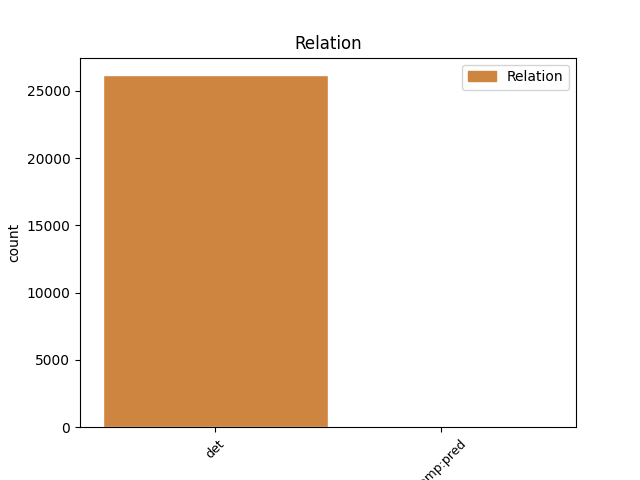
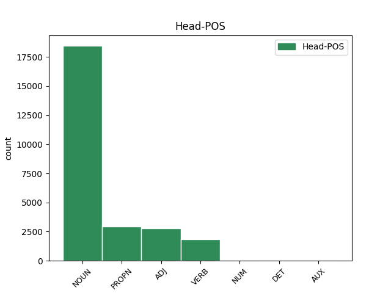
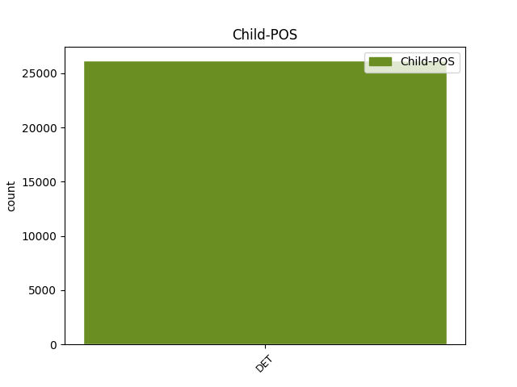

Distribution of features within this leaf



Agreement Rules sorted by frequency.
When the head token is NOUN and the dependent token is DET.
1 Ἡ _ _ _ _ 0 _ _ _
2 χάρις _ _ _ _ 0 _ _ _
3 τοῦ ὁ DET S- Case=Gen|Definite=Def|Gender=Masc|Number=Sing|PronType=Dem 4 det _ ref=REV_22.21
4 κυρίου κύριος NOUN Nb Case=Gen|Gender=Masc|Number=Sing 0 _ _ _
5 Ἰησοῦ _ _ _ _ 0 _ _ _
6 μετὰ _ _ _ _ 0 _ _ _
7 πάντων _ _ _ _ 0 _ _ _
When the head token is PROPN and the dependent token is DET.
1 καὶ _ _ _ _ 0 _ _ _
2 ὁ _ _ _ _ 0 _ _ _
3 θάνατος _ _ _ _ 0 _ _ _
4 καὶ _ _ _ _ 0 _ _ _
5 ὁ ὁ DET S- Case=Nom|Definite=Def|Gender=Masc|Number=Sing|PronType=Dem 6 det _ ref=REV_20.14
6 ᾅδης Ἅιδης PROPN Ne Case=Nom|Gender=Masc|Number=Sing 0 _ _ _
7 ἐβλήθησαν _ _ _ _ 0 _ _ _
8 εἰς _ _ _ _ 0 _ _ _
9 τὴν _ _ _ _ 0 _ _ _
10 λίμνην _ _ _ _ 0 _ _ _
11 τοῦ _ _ _ _ 0 _ _ _
12 πυρός _ _ _ _ 0 _ _ _
When the head token is ADJ and the dependent token is DET.
1 καὶ _ _ _ _ 0 _ _ _
2 ἐάν _ _ _ _ 0 _ _ _
3 τις _ _ _ _ 0 _ _ _
4 ἀφέλῃ _ _ _ _ 0 _ _ _
5 ἀπὸ _ _ _ _ 0 _ _ _
6 τῶν _ _ _ _ 0 _ _ _
7 λόγων _ _ _ _ 0 _ _ _
8 τοῦ _ _ _ _ 0 _ _ _
9 βιβλίου _ _ _ _ 0 _ _ _
10 τῆς _ _ _ _ 0 _ _ _
11 προφητείας _ _ _ _ 0 _ _ _
12 ταύτης _ _ _ _ 0 _ _ _
13 ἀφελεῖ _ _ _ _ 0 _ _ _
14 ὁ _ _ _ _ 0 _ _ _
15 θεὸς _ _ _ _ 0 _ _ _
16 τὸ _ _ _ _ 0 _ _ _
17 μέρος _ _ _ _ 0 _ _ _
18 αὐτοῦ _ _ _ _ 0 _ _ _
19 ἀπὸ _ _ _ _ 0 _ _ _
20 τοῦ _ _ _ _ 0 _ _ _
21 ξύλου _ _ _ _ 0 _ _ _
22 τῆς _ _ _ _ 0 _ _ _
23 ζωῆς _ _ _ _ 0 _ _ _
24 καὶ _ _ _ _ 0 _ _ _
25 ἐκ _ _ _ _ 0 _ _ _
26 τῆς _ _ _ _ 0 _ _ _
27 πόλεως _ _ _ _ 0 _ _ _
28 τῆς ὁ DET S- Case=Gen|Definite=Def|Gender=Fem|Number=Sing|PronType=Dem 29 det _ ref=REV_22.19
29 ἁγίας ἅγιος ADJ A- Case=Gen|Degree=Pos|Gender=Fem|Number=Sing 0 _ _ _
30 τῶν _ _ _ _ 0 _ _ _
31 γεγραμμένων _ _ _ _ 0 _ _ _
32 ἐν _ _ _ _ 0 _ _ _
33 τῷ _ _ _ _ 0 _ _ _
34 βιβλίῳ _ _ _ _ 0 _ _ _
35 τούτῳ _ _ _ _ 0 _ _ _
When the head token is VERB and the dependent token is DET.
1 Λέγει _ _ _ _ 0 _ _ _
2 ὁ ὁ DET S- Case=Nom|Definite=Def|Gender=Masc|Number=Sing|PronType=Dem 3 det _ ref=REV_22.20
3 μαρτυρῶν μαρτυρέω VERB V- Case=Nom|Gender=Masc|Number=Sing|Tense=Pres|VerbForm=Part|Voice=Act 0 _ _ _
4 ταῦτα _ _ _ _ 0 _ _ _
When the head token is NUM and the dependent token is DET.
1 καὶ _ _ _ _ 0 _ _ _
2 ἔπεσαν _ _ _ _ 0 _ _ _
3 οἱ _ _ _ _ 0 _ _ _
4 πρεσβύτεροι _ _ _ _ 0 _ _ _
5 οἱ ὁ DET S- Case=Nom|Definite=Def|Gender=Masc|Number=Plur|PronType=Dem 6 det _ ref=REV_19.4
6 εἴκοσι εἴκοσι NUM Ma Case=Nom|Gender=Masc|Number=Plur 0 _ _ _
7 τέσσαρες _ _ _ _ 0 _ _ _
8 καὶ _ _ _ _ 0 _ _ _
9 τὰ _ _ _ _ 0 _ _ _
10 τέσσερα _ _ _ _ 0 _ _ _
11 ζῷα _ _ _ _ 0 _ _ _
12 καὶ _ _ _ _ 0 _ _ _
13 προσεκύνησαν _ _ _ _ 0 _ _ _
14 τῷ _ _ _ _ 0 _ _ _
15 θεῷ _ _ _ _ 0 _ _ _
16 τῷ _ _ _ _ 0 _ _ _
17 καθημένῳ _ _ _ _ 0 _ _ _
18 ἐπὶ _ _ _ _ 0 _ _ _
19 τῷ _ _ _ _ 0 _ _ _
20 θρόνῳ _ _ _ _ 0 _ _ _
21 λέγοντες _ _ _ _ 0 _ _ _
When the head token is DET and the dependent token is DET.
1 πίστει _ _ _ _ 0 _ _ _
2 παρῴκησεν _ _ _ _ 0 _ _ _
3 εἰς _ _ _ _ 0 _ _ _
4 γῆν _ _ _ _ 0 _ _ _
5 τῆς _ _ _ _ 0 _ _ _
6 ἐπαγγελίας _ _ _ _ 0 _ _ _
7 ὡς _ _ _ _ 0 _ _ _
8 ἀλλοτρίαν _ _ _ _ 0 _ _ _
9 ἐν _ _ _ _ 0 _ _ _
10 σκηναῖς _ _ _ _ 0 _ _ _
11 κατοικήσας _ _ _ _ 0 _ _ _
12 μετὰ _ _ _ _ 0 _ _ _
13 Ἰσαὰκ _ _ _ _ 0 _ _ _
14 καὶ _ _ _ _ 0 _ _ _
15 Ἰακὼβ _ _ _ _ 0 _ _ _
16 τῶν _ _ _ _ 0 _ _ _
17 συνκληρονόμων _ _ _ _ 0 _ _ _
18 τῆς _ _ _ _ 0 _ _ _
19 ἐπαγγελίας _ _ _ _ 0 _ _ _
20 τῆς ὁ DET S- Case=Gen|Definite=Def|Gender=Fem|Number=Sing|PronType=Dem 21 det _ ref=HEB_11.9
21 αὐτῆς αὐτός DET Pd Case=Gen|Gender=Fem|Number=Sing 0 _ _ _
When the head token is AUX and the dependent token is DET.
1 δίκαιος _ _ _ _ 0 _ _ _
2 εἶ _ _ _ _ 0 _ _ _
3 ὁ ὁ DET S- Case=Nom|Definite=Def|Gender=Masc|Number=Sing|PronType=Dem 4 det _ ref=REV_16.5
4 ὢν εἰμί AUX V- Case=Nom|Gender=Masc|Number=Sing|Tense=Pres|VerbForm=Part|Voice=Act 0 _ _ _
5 καὶ _ _ _ _ 0 _ _ _
6 ὁ _ _ _ _ 0 _ _ _
7 ἦν _ _ _ _ 0 _ _ _
8 ὁ _ _ _ _ 0 _ _ _
9 ὅσιος _ _ _ _ 0 _ _ _
10 ὅτι _ _ _ _ 0 _ _ _
11 ταῦτα _ _ _ _ 0 _ _ _
12 ἔκρινας _ _ _ _ 0 _ _ _
13 ὅτι _ _ _ _ 0 _ _ _
14 αἵματα _ _ _ _ 0 _ _ _
15 ἁγίων _ _ _ _ 0 _ _ _
16 καὶ _ _ _ _ 0 _ _ _
17 προφητῶν _ _ _ _ 0 _ _ _
18 ἐξέχεαν _ _ _ _ 0 _ _ _
19 καὶ _ _ _ _ 0 _ _ _
20 αἷμα _ _ _ _ 0 _ _ _
21 αὐτοῖς _ _ _ _ 0 _ _ _
22 ἔδωκας _ _ _ _ 0 _ _ _
23 πεῖν _ _ _ _ 0 _ _ _
Disagree Examples:
1 Ἡροδότου _ _ _ _ 0 _ _ _
2 Ἁλικαρνησσέος _ _ _ _ 0 _ _ _
3 ἱστορίης _ _ _ _ 0 _ _ _
4 ἀπόδεξις _ _ _ _ 0 _ _ _
5 ἥδε _ _ _ _ 0 _ _ _
6 ὡς _ _ _ _ 0 _ _ _
7 μήτε _ _ _ _ 0 _ _ _
8 τὰ _ _ _ _ 0 _ _ _
9 γενόμενα _ _ _ _ 0 _ _ _
10 ἐξ _ _ _ _ 0 _ _ _
11 ἀνθρώπων _ _ _ _ 0 _ _ _
12 τῷ ὁ DET S- Case=Dat|Definite=Def|Gender=Masc,Neut|Number=Sing|PronType=Dem 13 det _ ref=1.1.0
13 χρόνῳ χρόνος NOUN Nb Case=Dat|Gender=Masc|Number=Sing 0 _ _ _
14 ἐξίτηλα _ _ _ _ 0 _ _ _
15 γένηται _ _ _ _ 0 _ _ _
16 μήτε _ _ _ _ 0 _ _ _
17 ἔργα _ _ _ _ 0 _ _ _
18 μεγάλα _ _ _ _ 0 _ _ _
19 τε _ _ _ _ 0 _ _ _
20 καὶ _ _ _ _ 0 _ _ _
21 θωμαστά _ _ _ _ 0 _ _ _
22 τὰ _ _ _ _ 0 _ _ _
23 μὲν _ _ _ _ 0 _ _ _
24 Ἕλλησι _ _ _ _ 0 _ _ _
25 τὰ _ _ _ _ 0 _ _ _
26 δὲ _ _ _ _ 0 _ _ _
27 βαρβάροισι _ _ _ _ 0 _ _ _
28 ἀποδεχθέντα _ _ _ _ 0 _ _ _
29 ἀκλεᾶ _ _ _ _ 0 _ _ _
30 γένηται _ _ _ _ 0 _ _ _
31 τά _ _ _ _ 0 _ _ _
32 τε _ _ _ _ 0 _ _ _
33 ἄλλα _ _ _ _ 0 _ _ _
34 καὶ _ _ _ _ 0 _ _ _
35 δι’ _ _ _ _ 0 _ _ _
36 ἣν _ _ _ _ 0 _ _ _
37 αἰτίην _ _ _ _ 0 _ _ _
38 ἐπολέμησαν _ _ _ _ 0 _ _ _
39 ἀλλήλοισι _ _ _ _ 0 _ _ _
1 ἀπικομένους _ _ _ _ 0 _ _ _
2 δὲ _ _ _ _ 0 _ _ _
3 τούς _ _ _ _ 0 _ _ _
4 Φοίνικας _ _ _ _ 0 _ _ _
5 ἐς _ _ _ _ 0 _ _ _
6 δὴ _ _ _ _ 0 _ _ _
7 τὸ _ _ _ _ 0 _ _ _
8 Ἄργος _ _ _ _ 0 _ _ _
9 τοῦτο _ _ _ _ 0 _ _ _
10 διατίθεσθαι _ _ _ _ 0 _ _ _
11 τὸν ὁ DET S- Case=Acc|Definite=Def|Gender=Masc|Number=Sing|PronType=Dem 12 det _ ref=1.1.2
12 φόρτον φόρτος NOUN Nb Case=Acc|Gender=Neut|Number=Sing 0 _ _ _
1 πέμπτῃ _ _ _ _ 0 _ _ _
2 δὲ _ _ _ _ 0 _ _ _
3 ἢ _ _ _ _ 0 _ _ _
4 ἕκτῃ _ _ _ _ 0 _ _ _
5 ἡμέρῃ _ _ _ _ 0 _ _ _
6 ἀπ’ _ _ _ _ 0 _ _ _
7 ἧς _ _ _ _ 0 _ _ _
8 ἀπίκοντο _ _ _ _ 0 _ _ _
9 ἐξεμπολημένων _ _ _ _ 0 _ _ _
10 σφι _ _ _ _ 0 _ _ _
11 σχεδόν _ _ _ _ 0 _ _ _
12 πάντων _ _ _ _ 0 _ _ _
13 ἐλθεῖν _ _ _ _ 0 _ _ _
14 ἐπὶ _ _ _ _ 0 _ _ _
15 τὴν _ _ _ _ 0 _ _ _
16 θάλασσαν _ _ _ _ 0 _ _ _
17 γυναῖκας _ _ _ _ 0 _ _ _
18 ἄλλας _ _ _ _ 0 _ _ _
19 τε _ _ _ _ 0 _ _ _
20 πολλάς _ _ _ _ 0 _ _ _
21 καὶ _ _ _ _ 0 _ _ _
22 δὴ _ _ _ _ 0 _ _ _
23 καὶ _ _ _ _ 0 _ _ _
24 τοῦ ὁ DET S- Case=Gen|Definite=Def|Gender=Masc,Neut|Number=Sing|PronType=Dem 25 det _ ref=1.1.3
25 βασιλέος βασιλεύς NOUN Nb Case=Gen|Gender=Masc|Number=Sing 0 _ _ _
26 θυγατέρα _ _ _ _ 0 _ _ _
1 μετὰ _ _ _ _ 0 _ _ _
2 δὲ _ _ _ _ 0 _ _ _
3 ταῦτα _ _ _ _ 0 _ _ _
4 Ἑλλήνων _ _ _ _ 0 _ _ _
5 τινάς _ _ _ _ 0 _ _ _
6 οὐ _ _ _ _ 0 _ _ _
7 γὰρ _ _ _ _ 0 _ _ _
8 ἔχουσι _ _ _ _ 0 _ _ _
9 τὸ _ _ _ _ 0 _ _ _
10 ὄνομα _ _ _ _ 0 _ _ _
11 ἀπηγήσασθαι _ _ _ _ 0 _ _ _
12 φασὶ _ _ _ _ 0 _ _ _
13 τῆς _ _ _ _ 0 _ _ _
14 Φοινίκης _ _ _ _ 0 _ _ _
15 ἐς _ _ _ _ 0 _ _ _
16 Τύρον _ _ _ _ 0 _ _ _
17 προσσχόντας _ _ _ _ 0 _ _ _
18 ἁρπάσαι _ _ _ _ 0 _ _ _
19 τοῦ ὁ DET S- Case=Gen|Definite=Def|Gender=Masc,Neut|Number=Sing|PronType=Dem 20 det _ ref=1.2.1
20 βασιλέος βασιλεύς NOUN Nb Case=Gen|Gender=Masc|Number=Sing 0 _ _ _
21 τὴν _ _ _ _ 0 _ _ _
22 θυγατέρα _ _ _ _ 0 _ _ _
23 Εὐρώπην _ _ _ _ 0 _ _ _
1 οὕτω _ _ _ _ 0 _ _ _
2 δὴ _ _ _ _ 0 _ _ _
3 ἁρπάσαντος _ _ _ _ 0 _ _ _
4 αὐτοῦ _ _ _ _ 0 _ _ _
5 Ἑλένην _ _ _ _ 0 _ _ _
6 τοῖσι ὁ DET S- Case=Dat|Definite=Def|Gender=Masc,Neut|Number=Plur|PronType=Dem 7 det _ ref=1.3.2
7 Ἕλλησι Ἕλλην NOUN Nb Case=Dat|Gender=Masc|Number=Plur 0 _ _ _
8 δόξαι _ _ _ _ 0 _ _ _
9 πρῶτὸν _ _ _ _ 0 _ _ _
10 πέμψαντας _ _ _ _ 0 _ _ _
11 ἀγγέλους _ _ _ _ 0 _ _ _
12 ἀπαιτέειν _ _ _ _ 0 _ _ _
13 τε _ _ _ _ 0 _ _ _
14 Ἑλένην _ _ _ _ 0 _ _ _
15 καὶ _ _ _ _ 0 _ _ _
16 δίκας _ _ _ _ 0 _ _ _
17 τῆς _ _ _ _ 0 _ _ _
18 ἁρπαγῆς _ _ _ _ 0 _ _ _
19 αἰτέειν _ _ _ _ 0 _ _ _